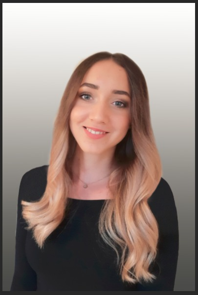

My passion and focus is e-learning!
My name is Iris Albrecht. I recently graduated from university of applied science in Karlsruhe, So I have a bachelor’s degree in communication and media management now.
I’m currently looking for a job in the e-Learning sector.
- I worked in this branch for one and a half year during my studies. I am an experienced user of the authoring tool Adobe Captivate.
- My bachelor's thesis, which I wrote in a software company, was about to develop a concept on how to introduce performance support into a company.
- I learned a lot of theory about online learning methods and I was also able to create several online learning modules and make them available on the learning platform Moodle.
The topic "learning with digital media" really fascinates me and I think my studies have prepared me perfectly for a job as a e-learning author.
- I’m good at the professional use of language and I have various IT skills.
- I gained extensive knowledge in illustration and visualization techniques.
- I’m a creative person and love to work with the Adobe Cloud Tools!
For 7 years I have been working as a professional face painter for various agencies in the area of Stuttgart that shows that I'm focused and reliable and that I can stay calm in stressful situations.
In my free time I'm interested in mobile App and website development.
Last year I created a website for a friend of the family. I also did the corporate design for the company of my uncle.
I was the last half year in Finland, Helsinki for an exchange semester. There, I got the chance to improve my language skills and prove my organizational ability. I gained a lot of intercultural experience and discovered my enthusiasm for travelling.
Especially my ability to impart application-related knowledge to a wide variety of user groups is a strength that I would like to demonstrate in your company. I am ambitious and I see the position as a e-learning author as a welcome challenge and I look forward to new tasks.
I will be happy to supply any other details you may require. Please contact me.
